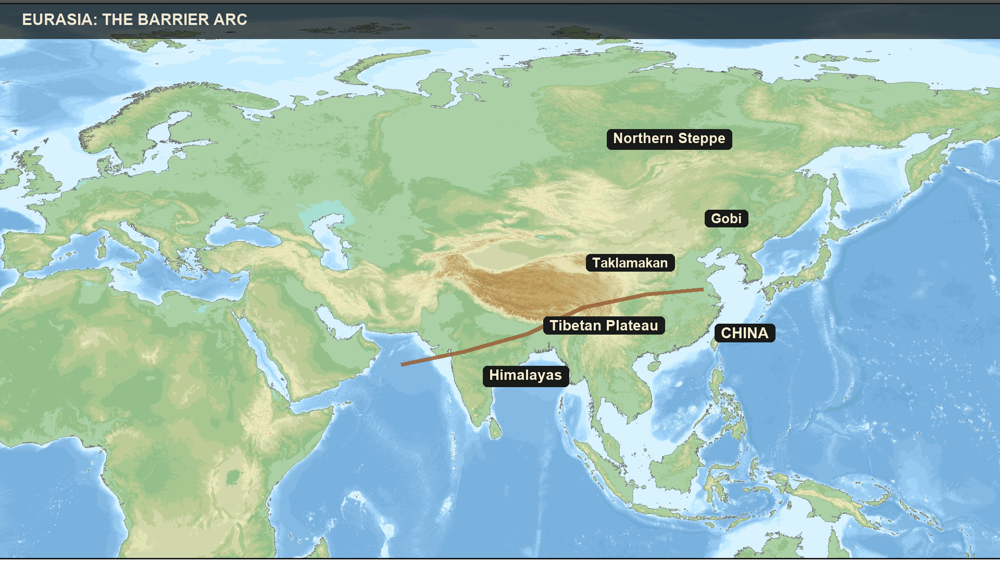
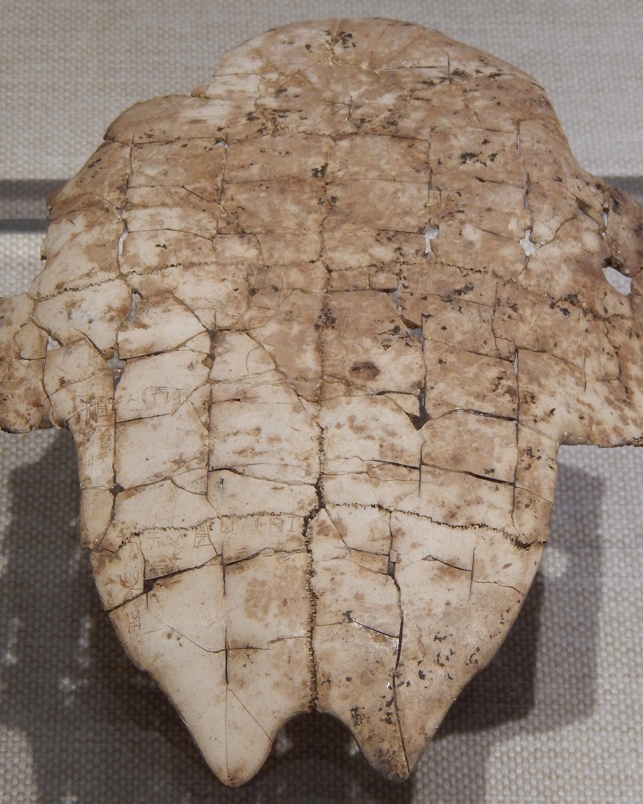
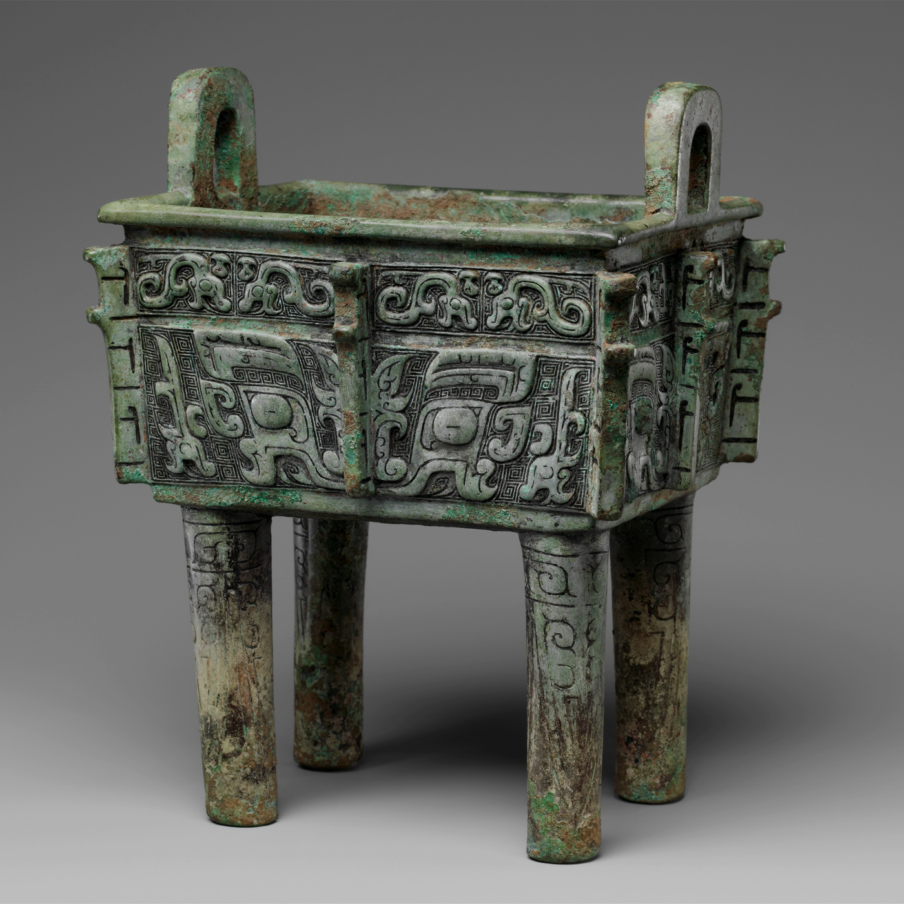
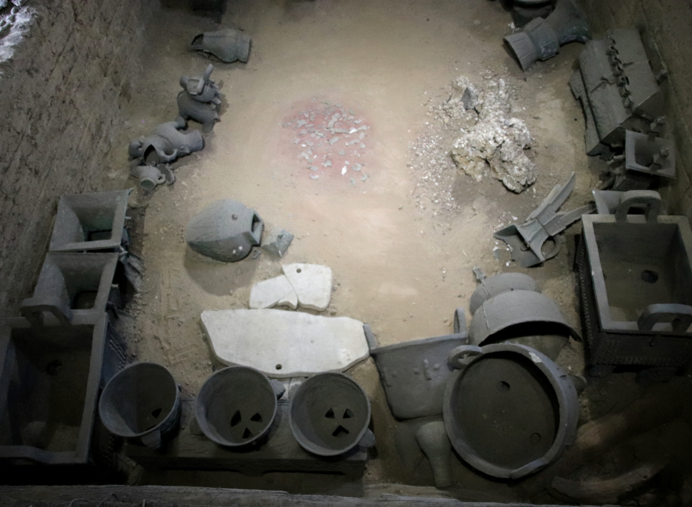
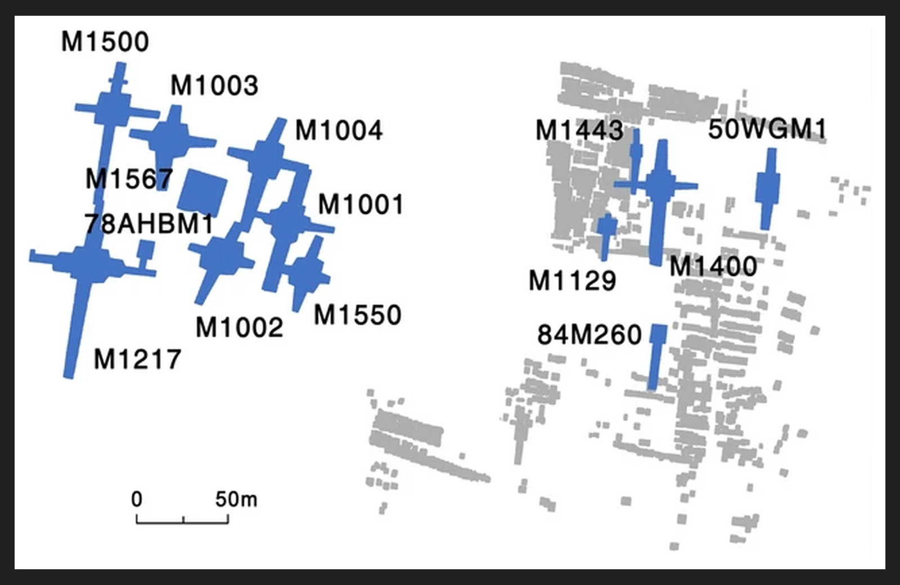
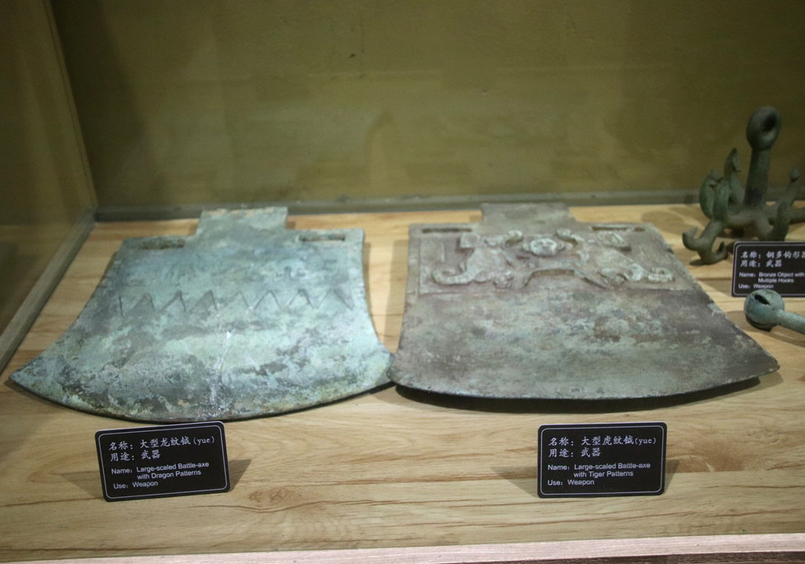

The Shang Sacred State — HIST 270, Chapter 1, Lecture 1
Where We're Going Today
The Land & the King (Q1–Q2)
- Two rivers, two agricultures — and relative isolation
- Oracle bones: how a king talked to the dead
- Religious monopoly as political power
The Tomb & the Workers (Q3–Q4)
- Lady Hao's unlooted tomb at Anyang
- Human sacrifice and rigid hierarchy
- Walls, tombs, and armies built by coercion
One question underneath: what made Shang kingship powerful?
Part I
How geography shaped agriculture and contact — Q1
Two Rivers, Two Agricultures
North: Yellow River
- Colder, drier climate
- Fertile loess soil, easy to work
- Staples: millet, later wheat
- Flooding required dikes — and cooperation
South: Yangzi River
- Warmer, wetter climate
- Staple: wet rice agriculture
- Navigable for hundreds of miles
- River traffic encouraged trade
Environment didn't dictate history — but it set the menu of choices.
A World Apart — Mostly
- Mountains, deserts, grasslands separated China from other early civilizations
- Result: largely independent development — writing invented indigenously
- But never sealed: wheat, chariots, horses arrived from the west
- Shang silk has been found in an Egyptian tomb
Isolation with open channels: indigenous foundations, selective borrowing.

The barrier arc: high mountains, vast deserts, open steppe
⏸ Pause & Reflect
Mountains and deserts kept other civilizations distant — yet wheat, chariots, and horses still arrived from the west.
What does selective borrowing tell us about what "isolation" really meant for early China?
Part II
Divination, ancestor worship, and royal power — Q2
Oracle Bones: Asking the Ancestors
- Cattle bones, turtle shells — heat applied, cracks read as answers
- Questions to the royal ancestors: harvests, war, hunts, illness
- Our best written source for the Shang — writing by 1200 BCE
- Also recorded enemies slain, booty taken — ritual and record-keeping fused

An inscribed turtle plastron — questions for the ancestors, ca. 1200 BCE
King and High Priest — One Office
- The king alone offered sacrifices to the royal ancestors — and through them, to Di
- A religious monopoly: no rival could bypass the king to petition the powers ruling weather and war
- Religious authority and political legitimacy reinforced each other

Ritual bronze vessel — the hardware of royal sacrifice
⏸ Pause & Reflect
The king was the only person who could petition Di — the god who controlled rain, wind, and harvest.
Why is a religious monopoly also a political weapon? Try stating your answer to Q2 as a causal claim, not a list.
Part III
Lady Hao, royal burials, and ritual violence — Q3
Lady Hao: Consort and General

The only royal Shang tomb found unlooted — discovered 1976
Consort of King Wu Ding — her command confirmed by inscribed oracle bones.
Hierarchy Written in Death
- Royal tombs included human sacrifices — sometimes dozens per burial
- One late Shang king's tomb: 90 followers + 74 victims, plus horses and dogs
- Victims often war captives, including Qiang prisoners; followers chose to accompany their lord
- Near the royal tombs: 1,200 victims in 191 sacrificial pits

A royal shaft tomb at Anyang — rank made visible in earth and bone
⏸ Pause & Reflect
Lady Hao commanded thirteen thousand troops — yet most Shang women left no trace in the record at all.
What can one spectacular, unlooted tomb tell us about a society — and what can't it tell us?
Part IV
Labor, coercion, and the gulf between rulers and ruled — Q4
Mobilizing Thousands
- Rammed earth walls, royal tombs, land clearance, warfare — all built on mass labor
- Rulers commanded thousands of workers for years at a time
- Meanwhile, farmers' tools were barely beyond Neolithic stone

Rammed earth: pounded loess, layer by layer, hard as concrete
Coercion as System
- Who were the workers? Scholars debate: slaves taken in war, or conscripts from serf-like farmers
- Either way, the labor was not voluntary — force sat behind every wall and tomb
- The gulf between rulers and ruled was enforced, not natural

The bronze yue axe — emblem of the power to command and to kill
⏸ Pause & Reflect
Walls, tombs, and armies all required thousands of workers who did not choose to be there.
Can a state built on coercion also be seen as legitimate by its people? What would the Shang king have said — and what would a laborer at Zhengzhou have said?
Coming Up: Lecture 2
The sacred state ran on two technologies we've only glimpsed: the written word and bronze.
Writing, Bronze, and the Wider World — literacy as political control, one script for many tongues, an 875-kilogram cauldron — and the Bronze Age civilization in Sichuan that nobody expected.